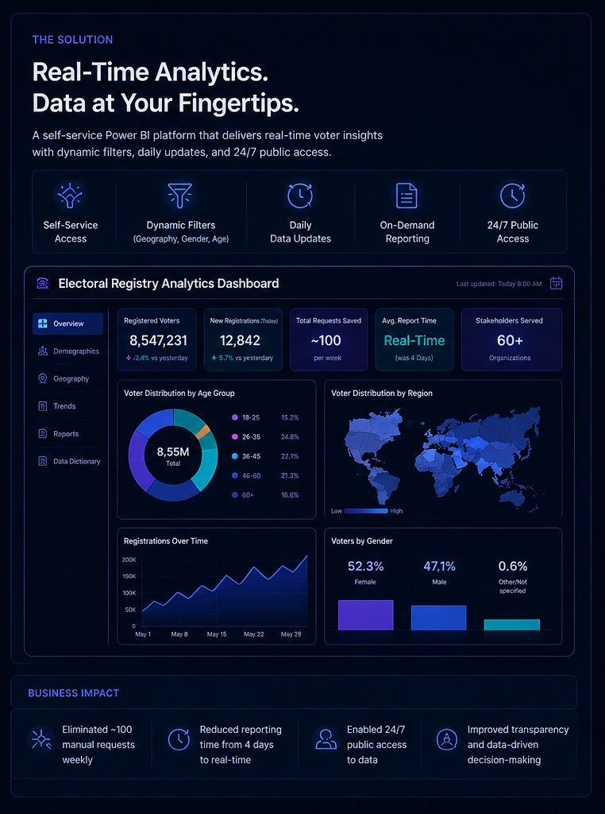

Electoral Registry Analytics Platform

Project Context
Managing a national electoral registry is not just about storing data—it’s about ensuring that critical information is accessible, accurate, and timely for decision-making. Before this initiative, accessing voter statistics was a slow and fragmented process. Every week, around 100 requests came in from political parties, universities, and organizations. Each request had to go through multiple administrative and technical steps—being received, assigned, processed, reviewed, and finally approved. The entire cycle could take up to four days. This not only created operational bottlenecks but also limited transparency and increased the risk of human error. Stakeholders depended on static, delayed reports instead of having direct access to the data they needed. I led the effort to rethink this process from the ground up. By working closely with stakeholders, I identified their core needs and redefined how data should be accessed and consumed. Instead of continuing with a manual, request-based model, I designed a self-service analytics solution using Power BI. The new approach enabled users to access data directly through a public dashboard, with dynamic filters such as geography, gender, and age. The system was integrated with existing electoral data sources and updated daily, ensuring accuracy and relevance. The impact was immediate and transformative. Manual requests were eliminated, reporting time was reduced from days to seconds, and stakeholders gained 24/7 access to the information they needed. What was once a slow, resource-intensive process became a scalable, transparent, and data-driven platform—empowering better decisions across the electoral ecosystem.
The Solution
- analytics Engineered an automated ETL (Extract, Transform, Load) pipeline to unify regional databases.
- dashboard Designed interactive executive dashboards for real-time monitoring of voter registration.
- security Implemented role-based access control to protect sensitive citizen information.
Strategic Impact
Operational Speed
Reduced data request fulfillment time from 3 business days to under 5 seconds via self-service dashboards.
Decision Accuracy
Eliminated reporting discrepancies between regional and central offices by 100%.
{kind=link}